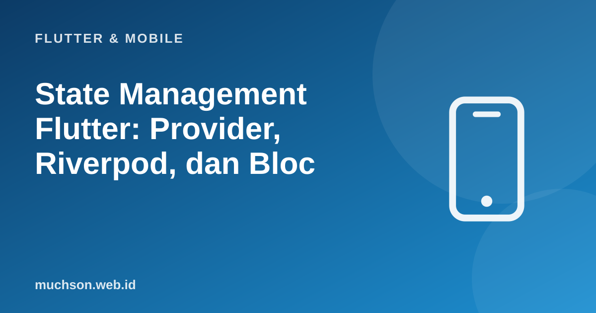

Beranda › Artikel › Flutter & Mobile
Flutter & MobileState Management Flutter: Provider, Riverpod, dan Bloc
Pertanyaan yang paling sering muncul dari pemula Flutter: "pakai state management apa?" Jawaban jujurnya: tergantung. Semua pustaka menyelesaikan masalah yang sama (membagikan state antar widget dan memisahkannya dari tampilan) dengan filosofi berbeda. Memahami masalahnya lebih dulu membuat pilihan menjadi jelas, dan memindah pustaka kemudian menjadi jauh lebih mudah.
Sebaiknya sudah paham: StatefulWidget dan setState, async Dart

Setelah membaca dan mencoba materi ini, Anda mampu:
- menjelaskan masalah yang diselesaikan state management
- membedakan state lokal (ephemeral) dan state aplikasi
- memahami pola ChangeNotifier + Provider, Notifier + Riverpod, dan Cubit/Bloc
- memisahkan logika dari tampilan agar mudah diuji
- memilih pendekatan sesuai ukuran dan tim proyek
Contoh Flutter ditampilkan sebagai kode yang mengikuti dokumentasi Flutter 3.x (Material 3, Dart 3). Bagian logika Dart murni dijalankan sungguhan dengan Dart SDK agar keluarannya dapat dibuktikan; kode yang butuh Flutter (widget) tidak dijalankan di halaman ini.
Masalahnya
// Dengan setState saja, data keranjang harus dikirim lewat banyak lapisan
HalamanBeranda(keranjang: keranjang, onTambah: tambah,
child: DaftarProduk(keranjang: keranjang, onTambah: tambah,
child: KartuProduk(produk: p, onTambah: tambah))) // ikon keranjang di AppBar juga perlu jumlahnya...| Jenis state | Contoh | Alat |
|---|---|---|
| Lokal (ephemeral) | Tab aktif, isi kotak ketik, animasi | StatefulWidget + setState |
| Aplikasi (dibagi) | Keranjang, pengguna yang login, tema, pengaturan | Provider, Riverpod, Bloc, dll. |
| Data server | Daftar produk dari API (cache, memuat, galat) | Riverpod AsyncNotifier, Bloc, atau pustaka cache |
Gagasan dasar: pola Observer
Semua pustaka bertumpu pada satu pola: objek yang menyimpan state, daftar pendengar, dan pemberitahuan saat state berubah. Berikut versi paling sederhananya dalam Dart murni (inilah yang dilakukan ChangeNotifier):
class ChangeNotifierMini {
final List<void Function()> _pendengar = [];
void tambahPendengar(void Function() f) => _pendengar.add(f);
void notifyListeners() { for (final f in _pendengar) { f(); } }
}
class ItemKeranjang {
ItemKeranjang(this.nama, this.harga, this.jumlah);
final String nama; final int harga; int jumlah;
}
class Keranjang extends ChangeNotifierMini {
final Map<String, ItemKeranjang> _item = {};
List<ItemKeranjang> get item => List.unmodifiable(_item.values); // salinan baca-saja
int get totalHarga => _item.values.fold(0, (j, i) => j + i.harga * i.jumlah);
int get jumlahBarang => _item.values.fold(0, (j, i) => j + i.jumlah);
void tambah(String nama, int harga) {
_item.update(nama, (i) { i.jumlah++; return i; }, ifAbsent: () => ItemKeranjang(nama, harga, 1));
notifyListeners(); // beri tahu semua widget yang berlangganan
}
void kurang(String nama) {
final i = _item[nama];
if (i == null) return;
if (--i.jumlah <= 0) _item.remove(nama);
notifyListeners();
}
}
void main() {
final keranjang = Keranjang();
// "widget" yang berlangganan: ikon di AppBar dan ringkasan total
keranjang.tambahPendengar(() => print(' [ikon AppBar] badge = ${keranjang.jumlahBarang}'));
keranjang.tambahPendengar(() => print(' [ringkasan] total = Rp${keranjang.totalHarga}'));
print('tambah kopi'); keranjang.tambah('Kopi', 20000);
print('tambah kopi'); keranjang.tambah('Kopi', 20000);
print('tambah teh'); keranjang.tambah('Teh', 15000);
print('kurang kopi'); keranjang.kurang('Kopi');
}tambah kopi
[ikon AppBar] badge = 1
[ringkasan] total = Rp20000
tambah kopi
[ikon AppBar] badge = 2
[ringkasan] total = Rp40000
tambah teh
[ikon AppBar] badge = 3
[ringkasan] total = Rp55000
kurang kopi
[ikon AppBar] badge = 2
[ringkasan] total = Rp35000
Provider + ChangeNotifier
// pubspec: provider: ^6.x
class Keranjang extends ChangeNotifier {
final Map<String, ItemKeranjang> _item = {};
int get totalHarga => ...;
void tambah(Produk p) { /* ubah _item */ notifyListeners(); }
}
void main() {
runApp(
ChangeNotifierProvider( // menyediakan satu instance ke seluruh pohon di bawahnya
create: (_) => Keranjang(),
child: const AplikasiSaya(),
),
);
}
// membaca dan membangun ulang bila berubah
class IkonKeranjang extends StatelessWidget {
const IkonKeranjang({super.key});
@override
Widget build(BuildContext context) {
final jumlah = context.watch<Keranjang>().jumlahBarang; // watch: rebuild saat berubah
return Badge(label: Text('$jumlah'), child: const Icon(Icons.shopping_cart));
}
}
// memanggil aksi tanpa ikut rebuild
FilledButton(
onPressed: () => context.read<Keranjang>().tambah(produk), // read: sekali, tidak berlangganan
child: const Text('Tambah'),
)
// membangun ulang bagian kecil saja
Selector<Keranjang, int>(selector: (_, k) => k.totalHarga, builder: (_, total, __) => Text('Rp$total'))Riverpod: provider global yang aman
// pubspec: flutter_riverpod
final keranjangProvider = NotifierProvider<KeranjangNotifier, List<ItemKeranjang>>(KeranjangNotifier.new);
class KeranjangNotifier extends Notifier<List<ItemKeranjang>> {
@override
List<ItemKeranjang> build() => []; // state awal
void tambah(Produk p) {
final ada = state.any((i) => i.id == p.id);
state = ada
? [for (final i in state) if (i.id == p.id) i.salinDengan(jumlah: i.jumlah + 1) else i]
: [...state, ItemKeranjang.dari(p)]; // state immutable: selalu buat daftar BARU
}
}
// provider turunan: dihitung otomatis dan di-cache
final totalProvider = Provider<int>((ref) => ref.watch(keranjangProvider).fold(0, (j, i) => j + i.harga * i.jumlah));
// data asinkron: status memuat/galat/data sudah dikelola
final produkProvider = FutureProvider<List<Produk>>((ref) => ref.watch(repositoryProvider).semua());
void main() => runApp(const ProviderScope(child: AplikasiSaya()));
class Beranda extends ConsumerWidget {
const Beranda({super.key});
@override
Widget build(BuildContext context, WidgetRef ref) {
final produk = ref.watch(produkProvider); // AsyncValue
return produk.when(
loading: () => const CircularProgressIndicator(),
error: (e, _) => Text('Gagal: $e'),
data: (daftar) => ListView(children: [for (final p in daftar) ListTile(title: Text(p.nama), onTap: () => ref.read(keranjangProvider.notifier).tambah(p))]),
);
}
}Bloc/Cubit: aliran peristiwa yang eksplisit
// Cubit: kelas dengan emit(state baru)
class KeranjangState {
const KeranjangState({this.item = const []});
final List<ItemKeranjang> item;
}
class KeranjangCubit extends Cubit<KeranjangState> {
KeranjangCubit() : super(const KeranjangState());
void tambah(Produk p) => emit(KeranjangState(item: [...state.item, ItemKeranjang.dari(p)]));
}
BlocProvider(create: (_) => KeranjangCubit(), child: ...);
BlocBuilder<KeranjangCubit, KeranjangState>(builder: (context, state) => Text('${state.item.length} barang'));
context.read<KeranjangCubit>().tambah(produk);
// Bloc penuh: event masuk, state keluar -> setiap perubahan tercatat sebagai peristiwa bernama
// on<TambahProduk>((event, emit) => emit(...));Memilih
| Pendekatan | Kekuatan | Pertimbangan | Cocok untuk |
|---|---|---|---|
| setState + angkat state | Tanpa dependensi, sederhana | Tidak skala ke banyak layar | Prototipe, state lokal |
| Provider (ChangeNotifier) | Mudah dipelajari, direkomendasikan dokumentasi Flutter untuk pemula | Bergantung BuildContext; mutable state perlu disiplin | Aplikasi kecil sampai menengah |
| Riverpod | Aman terhadap waktu kompilasi, tanpa context, async kelas satu, mudah diuji | Konsep baru (provider, ref) dan pembaruan versi | Menengah sampai besar; banyak data server |
| Bloc/Cubit | Struktur ketat, peristiwa terlacak, sangat teruji | Lebih banyak kode | Tim besar, domain kompleks, aplikasi perusahaan |
Jangan memilih berdasarkan popularitas di media sosial. Pilih yang tim Anda pahami dan konsisten memakainya. Yang terpenting lebih dari pustaka: logika bisnis dipisahkan dari widget sehingga dapat diuji sebagai kelas Dart biasa dan pustaka dapat diganti di kemudian hari.
1. Mengapa logika keranjang di kelas Dart murni mudah diuji?
2. Kapan setState sudah cukup?
3. Apa risiko memakai context.watch di dalam onPressed?
4. Apa gunanya Selector pada Provider?
- State management membagikan state aplikasi tanpa prop drilling dan memisahkan logika dari tampilan.
- Pola dasar: objek state + pendengar + notifikasi (ChangeNotifier).
- Provider sederhana, Riverpod aman dan kuat untuk data asinkron, Bloc ketat dan terlacak.
- Pilih yang dipahami tim; yang utama: logika bisnis terpisah dan teruji.